$$qf_commondoc_header.start$$ $$qf_commondoc_header.end$$
Introduction
This tutorial explains how to use the Curve-Fit plugin. It is based on example data that is available from the example-directory of this plugin $$plugin_info:examplesdir:curve_fit$$. We will use these data-files:
- hist-double-gauss.csv which contains data for a histogram with 2 Gaussian peaks.
- hist-single-gauss.csv which contains data for a histogram with 1 Gaussian peak.
and fit some model functions to them. For this purpose we will load the data using the curves Plugin, which represents simple data-curves from any file. However, this is only one way to use this plugin. In addition it is possible to also fit any xy-graph in a table raw data record (RDR) in the current project (this will be shown in a later part of this tutorial). Above these two options, also other RDRs may expose curves to this plugin. If so they will appear in the files-list of the curve-fit editor window. An example for such plugins are the FCS MaxEnt Evaluation and the FCS MSD Evaluation, which both allow to fit models to their resulting (distribution) curves. Finally it is possible to create a table- or curve-RDR from virtually any plot in QUickFit, by right-clicking the plot widget and then selecting Copy Plot Data to Table RDR or Copy Plot Data to Curve RDR. See the help-page $$qf_ui_jkqtplotter_helpfiletitle$$ for further details on this option.
Loading Data as a Curve-RDR
As mentioned above, we will now load the two test-datasets as curve RDRs into the project.
- Start a new project and then click on the mainwindow menu entry Data Items | Insert Raw Data | XY-Curves | Insert single-file curves.
- Select the two files mentioned above and click on OK.
- Now the "CSV Import Properties dialog opens, where you have to set the properties of the CSV-import. The files are comma-separated and use a dot as decimal-separator. Comments are started by #. Usually this dialog can determine the parameters correctly form the file and you see the expected table at the bottom-right. If this is not the case, alter the data until everything is OK. Also you'll have to select the columns to use as X-, Y- and YError-data at the bottom-left (here we use the first column "hist_x" for x-data and the second columne "hist(N(2_5))" as y-data):
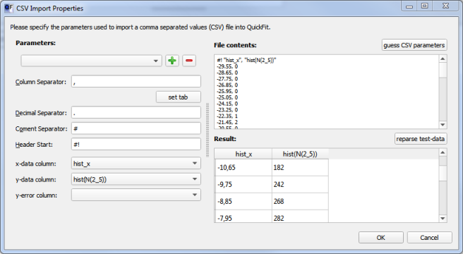
When everything is set correctly, click on OK. The two files will be loaded into the project, which will look as follows:
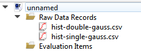
- You can look at the data by double-clicking any of the entries in the project. E.g. for the first record hist-double-gauss.csv a dialog like this will open up:
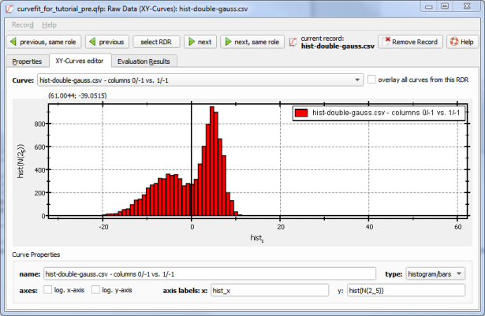
With these dialogs you can alter some basic properties of the data (log-axes, axis-labels etc.) below the plot and check whether the data has been loaded correctly. The second file will open a plot like this:
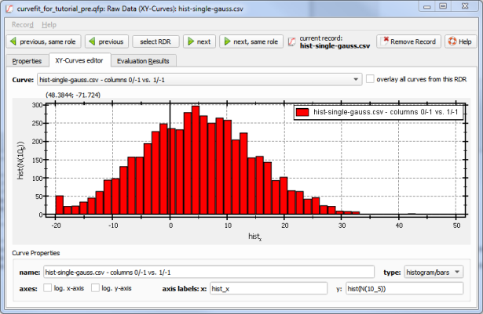
Performing a Curve-Fit
Now we will fit a single- or double-Gaussian-fit function $[f(x)=Y_0+\sum\limits_{i=1}^2A_i\cdot\exp\left(-\frac{1}{2}\cdot\frac{(x-X_i)^2}{w_i^2}\right)]$ to these two datasets:
- First we have to add a curve-fit to the project. To do so click on the mainwindow menu-entry Data Items | Insert Evaluation | General Curve Fitting | Curve Fitting. A new evaluation item will appear in the project:
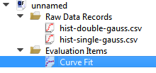
- Double-click this new evaluation item to open the curve-fit editor window:
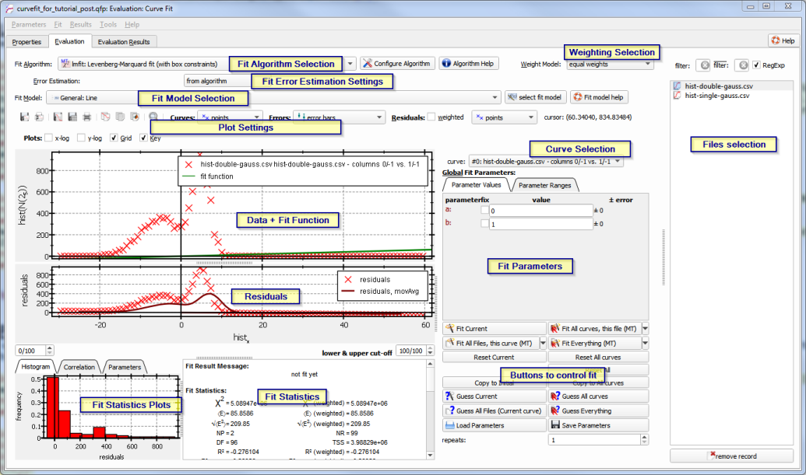
This dialog consists of a list with all accessible RDRs in the project on the rhs. On the lhs you can see a plot of the data with the current fit function and below that the residulas. At the bottom of the window, the fit statistics are displayed together with fit statsitics plots, such as a residual correlation function or the residual histogram. Between these plots and the RDRs/files list, there are widgets to edit the current parameters of the fit model. AT the top of the dialog, you can select the fit algorithm, error estimation method and fit model.
Each RDR in the project can contain several curves (this is not used by our current example!). Above the fit parameters, you can select the displayed/fitted curve in the current file/RDR from a combobox:
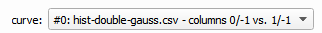
- First we select the fit algorithm $$fitalgorithm:name:fit_lmfit$$, which is a good choice in most cases.
- Next we select the correct fitting model, which will be $$fitfunction:name:gen_multigaussian_sqrte$$ for this tutorial (initially a simple linear model is selected).
- This plugin provides different methods to calculate the fit-parameter error. The default setting "from algorithm" uses the methods implemented in the fit-algorithm, which is usually based on the Variance-Covariance-matrix of the least-squares problem and gives good estimators, if the model-parameters are mostly independent (non-correlated). You can also select "bootstrapping" here, which will use a bootstrapping approach to error estimatein, i.e. fit different randomly selected sub-sets of the data repeatedly and the calculate the standard-deviation of each fit-parameter over these repeats and use that as error estimate.
- As can be seen, many data-points are 0. These should be removed from the dataset before the fit. This can be done with the lower & upper cut-off spinboxes below the residuals. Use them now to cut several datapoints at the start and end of the curve:
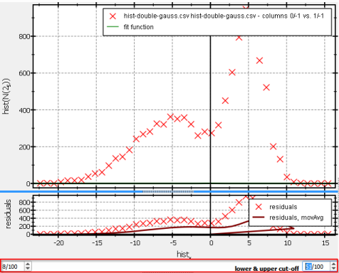
If you have several dataset that are equal, you can right-click into these spin-boxes and copy the settings to other curves in the current file, or to other files.
- Next we have to set good initial parameters for our fit. First for the current model we have to select the number of Gaussian components. As the RDR hist-double-gauss.csv contains a double-peak, we select 2 components. This can be done in the fit-parameter widget between the plot and the files-list:
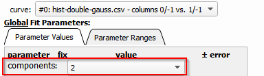
To estimate the remaining parameter, different ways exist:
- You can edit the parameters by hand, e.g. set the to these value to get a not-too-bad fit:
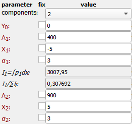
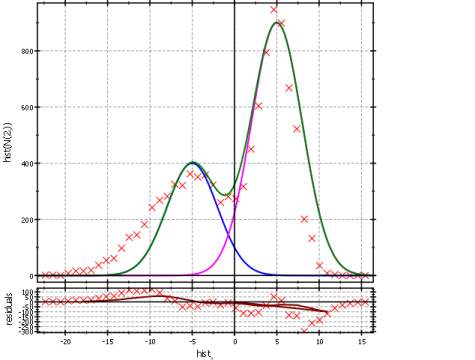
- You can semi-automatically guess the values by right-clicking on a point in the plot, e.g. the tip of the right Gaussian:
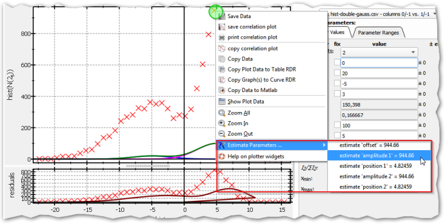
Then you can use the sub-menu Estimate Paramters ... in the context-menu to set the value of a parameter, based on the selected point. E.g. selecting "amplitude 2" will set the amplitude $(A_2)$ to the y-position of the mouse-click. This can be repeated for all the other parameters. Those parameters that cannot be set by this value can be set, as described above.
- Finally there is a completely automatic way to detemine these parameters. Simply select the number of components and then click on the button
and QuickFit will try and guess the model parameters form the dataset. Note however that this is not implemented in every model and sometimes the results are not too good, as no full fit is performed. Here are some example results:
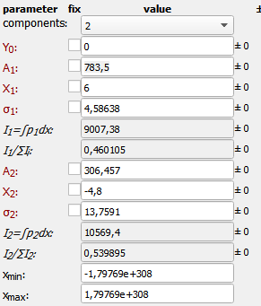
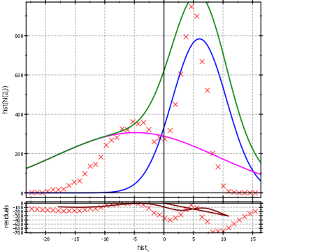
- Now we can perform the fit by clicking on
- If the fit does not converge properly, you can go back one step and edit the initial parameters and then repeat the fit. ANother possibility is to use the fit algorithm $$fitalgorithm:name:fit_simanneal$$ instead of lm_fit. This algorithm performs a stochastic search and often produces good starting parameters for a further run with lm_fit. If the fit succeeds, the results will look e.g. like this:
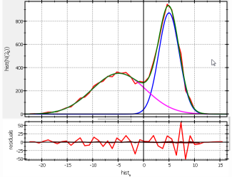
As you can see, the residuals are nicely scattering randomly around 0 and the green model curve fits nicely to the red dataset (BTW: The blue and magenta curve are the two single Gaussian components, which are automatically plotted by the model!). You can also judge the fit quality by looking at the residual histogram , which shows a distribution that is nicely centered around 0 and the residual correlations that also scatter around 0:
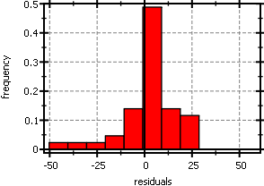
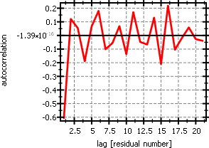
$$startbox_note$$
In addition to the fit parameters that are marked with red text, the model contains additional parameters (italic labels!). These are calculated from the fit results. As an example, here the single components (magenta, blue) are integrated over and the absolute and relative area under these curve are given:
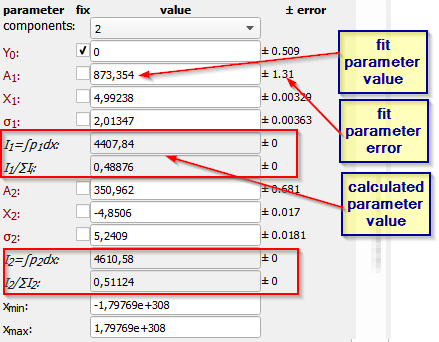
In addition this model also supports parameters that can be set, but cannot be a fit parameter. Here these are $(x_{min}, x_{max})$, which are the integration-limits.
$$endbox$$
$$startbox_note$$
When you started editing the parameters, before the first fit, you actually edited the initial parameters. This happens any time, you select a curve for which no fit esits yet. It is indicated by the text "Global Fit Parameters" above the parameters:
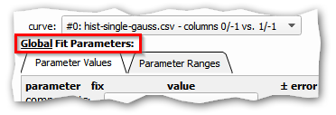
After you performed a fit, this changes to "Local Fit Parameters" and if you edit a parameter, this is stored for the current curve only:
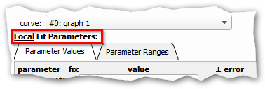
If you are not satisfied with the current fit, you can always go back to the initial/global parameters by clicking on "Reset Current"!
$$endbox$$
- For comparison, try to fit the same dataset with one component only:
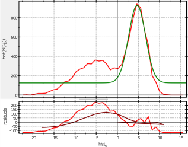
Now also the residual histogram and correlation are skewed and show non-random structures:
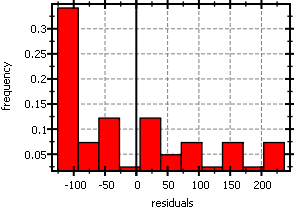
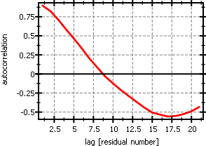
- So, return to the 2-component fit!
- Now we can fit the next file. Assuming that we want to reuse the current fit parameters as initial values for the next fit, we can click on
to set them as initial values. Now select the second file hist-single-gauss.csv in the list on the right. As this file represents a one-component distribution, also the initial parameters that we copied for demo-purposes do not fit too well:
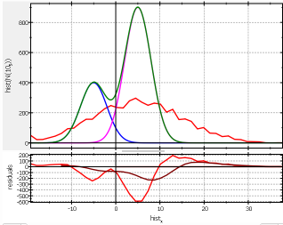
Nevertheless, you can try a fit, which will typically have one domninant component, e.g.:
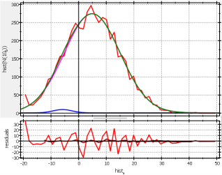
So for this dataset, it might be enough to return to a 1-component fit.
$$startbox_note$$
If you have several RDRs/files with comparable contantents you can automatize the fitting:
- Choose the first file and determine a good fit, as described above
- When you are satisfied click on "Copy To Initial" to setthe fit result as initial values for the further fits.
- Now you can use "Fit All Files, this curve" to fit the current curve in all files, or "Fit Everything" to fit all curves in all files.
- After the fit has finished you can go through the different files and curves therein and check the results.
$$endbox$$
Table of Fit results
Sometimes you want to get a table of the fit results for the same model form different files. This is availble in the tab Evaluation Results in this window:
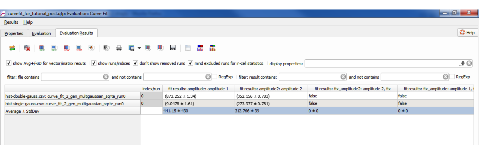
Here you have a table with one row for each curve and one column per fit parameter. See the help-page $$qf_ui_eval_helpfiletitle$$ for further details on how to use this screen.
Parameter-Ranges and -Fixing
Up until now, all fit parameters were free. However, sometimes additional information is known about the data. E.g. the datsets above are histograms, so we can sevaly assume that the offset has to be zero $[Y_0=0]$ and that the amplitudes have to be positive:$[A_i\geq0]$ These conditions can be supplied to the fit algorithm by fixingcertain parameters to predefined values and setting the ranges, in which the fit algorithm may choose their values:
- First we will fix $(Y_0=0)$. To do so, set $(Y_0)$ to 0 and then check the checkbox on the lhs of the parameter editor widget:
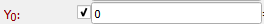
Now this parameter is no longer fitted, but is fixed to 0.
- Next we will change the fit parameter ranges. To do so:
- Click on the Parameter Ranges tab above the parameter widgets:
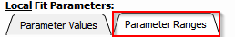
- Now edit the parameter ranges, so that the minimum of $(A_1)$ and $(A_2)$ is 0:
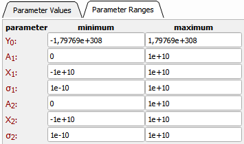
- Now you can repeat the fit (see above) with the new parameter ranges and fixings.
Model Selection
Often the question occurs, how many components (e.g. Gaussian components in this tutorial, or e.e.g which polynomial-degree) a dataset statistically supports. For this task, you can use advanced fit statistics, such as the Akaike Information criterion (AIC), or the Bayes Informationc criterion (BIC) that are described on the help-page Explanation of Fit Statistics. These parameters assign a number to each plot that takes into account the quality of fit, as well as the model complexity (i.e. number of parameters). For these two parameters, one should choose the model, for which AIC or BIC have the smallest value (if they are below 0, also the most negative velaue!). To demonstrate this:
- Return to the 2-peak file hist-double-gauss.csv.
- Fit this dataset, as described above, with different numbers of components. For each fit, note down these values from the fit-statistics at the bottom-center of the plot:
- the residual sum of squares $(\chi^2)$
- the number of fit parameters NP
- the AICc
- the BIC
|
|
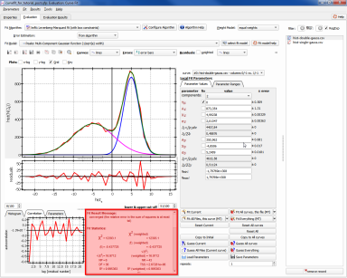 |
- If you fix $(Y_0=0)$ and ensure $(A_i\geq0)$, as well as $(-20\leq X_i\leq10)$ as described above, you should get result like these:
| components |
NP |
$(\chi^2)$ |
AICc |
BIC |
| 1 |
3 |
$(1.06\cdot10^6)$ |
442 |
446 |
| 2 |
6 |
12393 |
258 |
266 |
| 3 |
9 |
11078 |
266 |
276 |
As you can see, adding more components can improve the $(\chi^2)$ (e.g. from 2 to 3), but the AIC and BIC increase again, as the additional components are not really supported statistically by the dataset.
Fits to data in a table-RDR and Fit weighting
As mentioned in the introduction, the curve_fit-plugin may also be used to fit models to plot in a table RDR:
- Add a table-RDR to the project by clicking on the mainwindow menu entry Data Items | Insert raw Data | Table | Editable Table. The double-click on the new table-entry in the project:
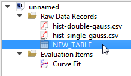
- In the table-editor, choose the second tab "Data Table" and start editing the table (see the documentation of the table RDR PLugin for details on this!):
- double-click the first column-header "1: 0". Then enter X as new column title and press OK.
- enter the number 1,2,...20 into the cells of the first column. If you need more rows, press 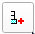
above the table repeatedly.
- double-click the second column-header "2: 1". Then enter Y as new column title. In addition, activate the "Expression" and enter this expression: $$bqcode:5*exp(-column(1)/3)+2*exp(-column(1)/15)+randnormvec(20)*0.3*(1-column(1)/40)$$
Finally press OK. This will generate a column of values $[f(x)=5\cdot e^{-x/3}+2\cdot e^{x/15}+\mathcal{N}(0,0.3\cdot (1-x/40))]$ this correspconds to a double-exponential function of the values in the first column (returned by columne(1)). To these values, a normally-distributed random number is added, which has zero-mean and standard deviation of $(0.3\cdot (1-x/40))$ that varies with the x-value from column 1. We use QuickFit's internal expression parser for this!
- double-click the second column-header "3: 2". Then enter Yerror as new column title. In addition, activate the "Expression" and enter this expression: $$bqcode:0.3*(1-column(1)/40)$$
Finally press OK. This will calculate the expected error for each value.
- The data should look as follows (up to the random error):
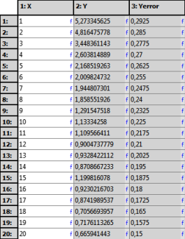
- Now we generate plot form this data:
- Switch to the tab "Plots" and add a new plot by clicking 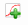 at the top-left.
- Then add a new graph, by clicking
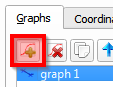
In the Graphs-tab on the rhs of the dialog.
- For the new graph, choose these settings:
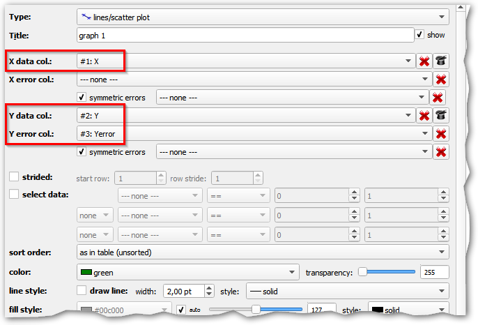
- You should get a plot like this:
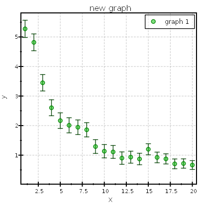
You can set the axis ranges if you choose the tab "Coordinate System" on the rhs and then "Axes".
- Now we will try and fit a model to this graph, so you can close the table.
- Now add a new Curve fit to the project (as above, click Data Items | Insert Evaluation | General Curve Fitting | Curve Fitting). In the file/RDR list, you should see the new table now:
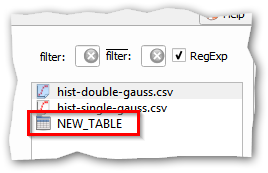
So choose this table.
- Until now, the error bars are not displayed. To show them, you have to select the "Weight Model = per run error":
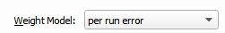
Now the plot displays the error bars, bit the residuals are still unweighted (although a fit would already be weighted!). So choose:
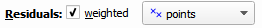
to also display weighted residuals. $$note:This splitting of the setting for the fit (at the top of the window) and for the plot (i.e. display only) above the plots allows to easily compare weighted and unweighted residuals in the plot.$$
- Next we have to select a proper model for this fit. Since we want to fit a multi-exponential decay, choose $$fitfunction:name:gen_multiexp$$: $[f(x)=Y_0+\sum_{i=1}^\text{components}A_i\Cdot\exp\left(-\frac{x-X_i}{\tau_i}\right)]$
- You can use
to guess good initial values and then fix $(Y_0=X_i=0)$ (this ensures that the fit is not underdetermined and provides a bit of information that we have about the data.
- Finally fit the data with
If you have chosen one component, the fit might look like this:
 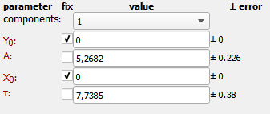
For a 2-component fit, you get:
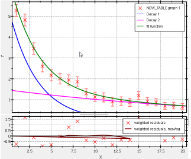
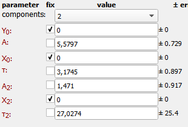
These results are already pretty close to the values that we expect from our dataset!
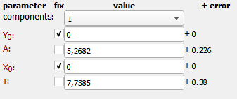
For a 2-component fit, you get:
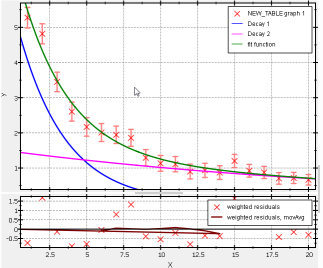
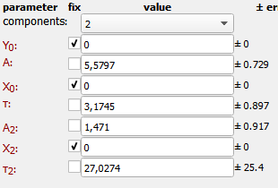
These results are already pretty close to the values that we expect from our dataset!
$$note:If you table contains several curves or several curves with different plots, you can select the one to fit in the combobox curve above the fit parameters:
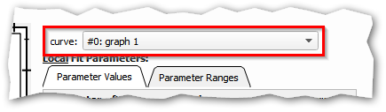
$$